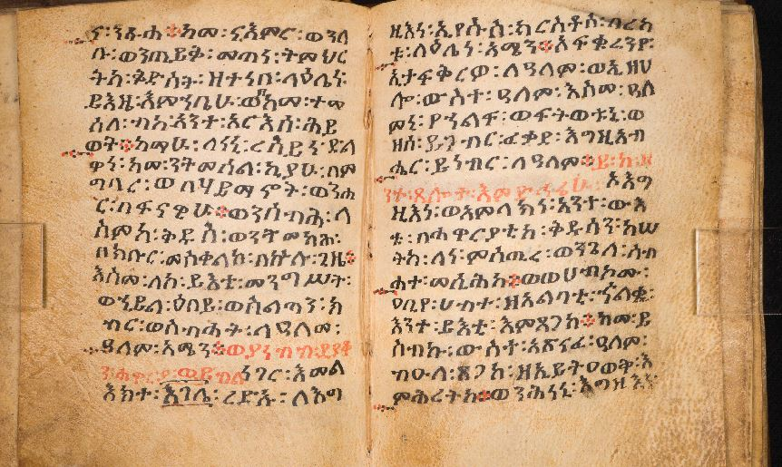
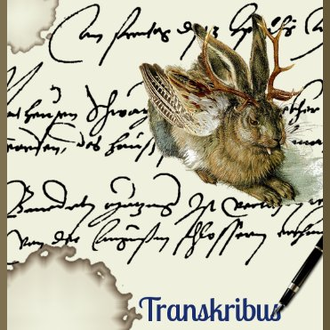
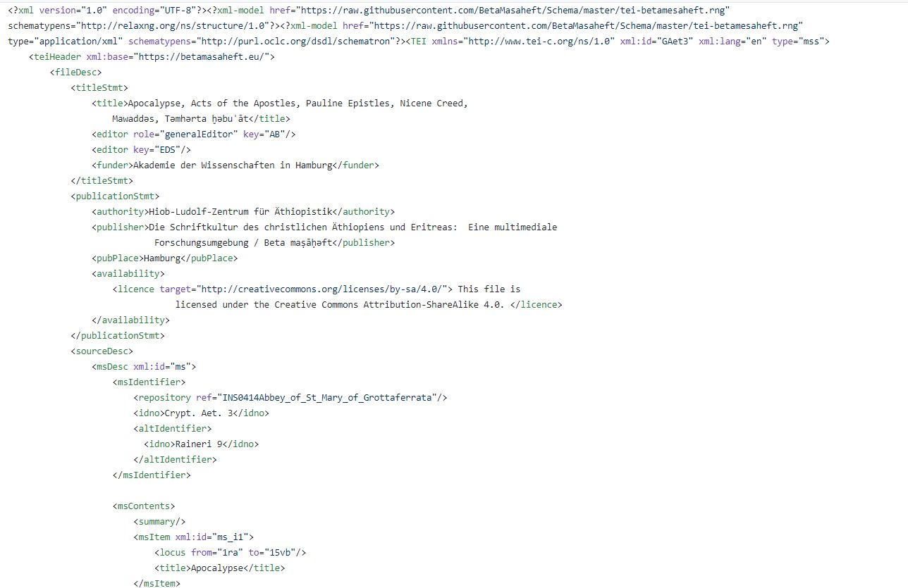
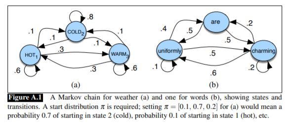
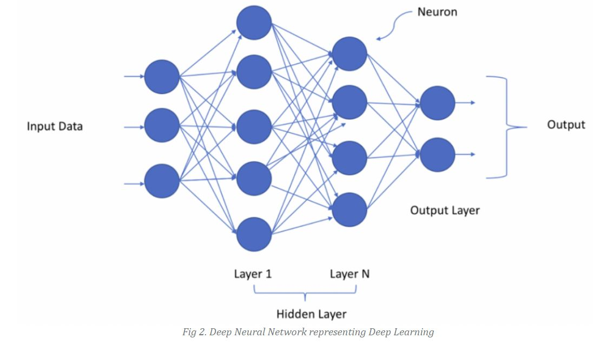
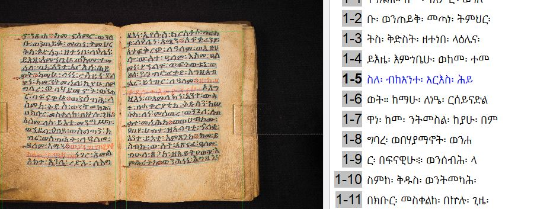
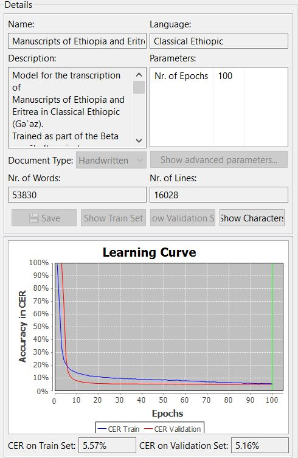
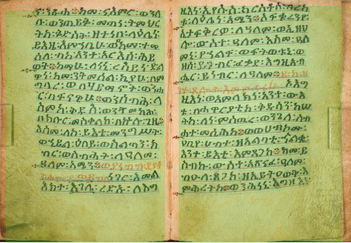
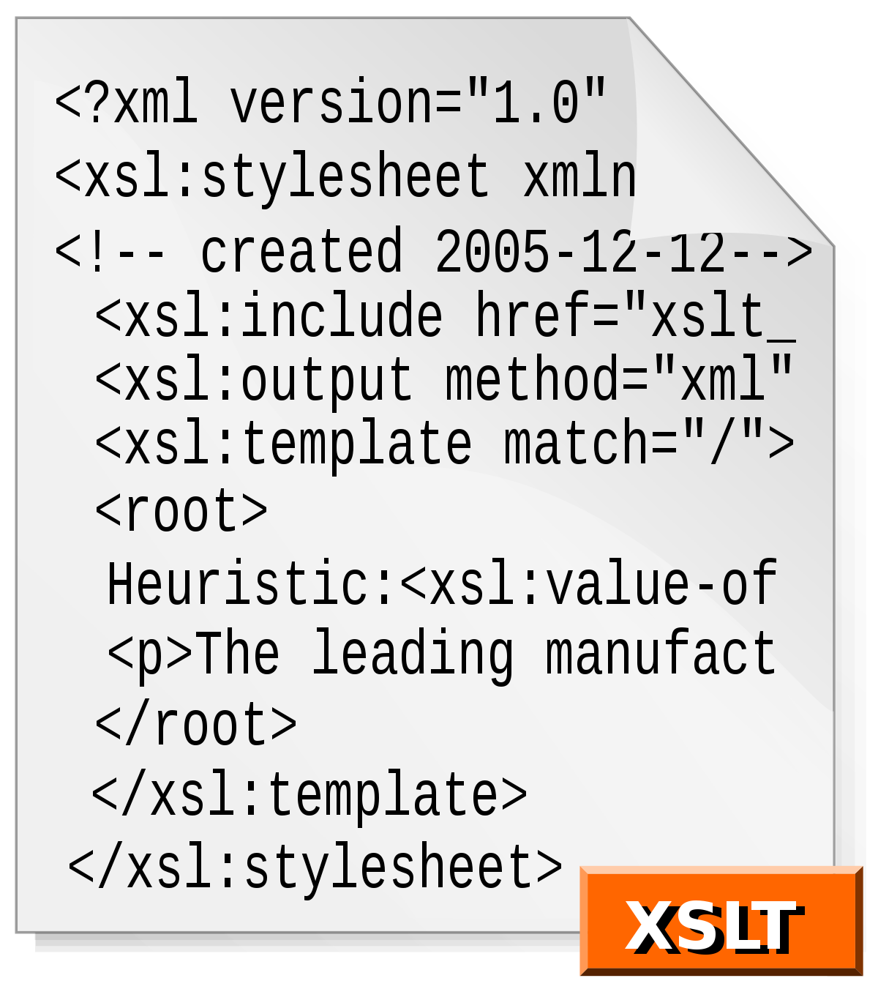

Working with Transkribus
From MSS to texts
Hizkiel Alemayehu
hizkiel.alemayehu@studio.unibo.itDecember 16, 2020, Hamburg
About me
- I am a Digital Humanities student at University of Bologna.
- Currently I am Erasmus trainee at The Hiob Ludolf Centre for Ethiopian and Eritrean Studies (HLCEES).
- I am working on Ethiopic manuscript transcription using Transkribus in Beta maṣāḥǝft project.
Introduction
 →  →  →
This presentation describes the workflow used to transcribe Manuscripts from the Ethiopian and Eritrean Tradition. The focus is here on obtaining a TEI file with an initial text transcription which profits from a wealth of information which is machine generated but can still be used in a context of community based contributions.
TEI
The Text Encoding Initiative (TEI) is a consortium which collectively develops and maintains a standard for the representation of texts in digital form.
Beta maṣāḥǝft project
- Able to collect a number of manuscritps.
- Working on cataloging
- Getting transcription
- But getting transcription of each manuscript is impossible
Transcription
This stage is critical to get sufficient acquaintance with a text to be able to carry out the editorial and philological work.
Require specific knowledge and expertise and are often a long and time consuming task
Why Technology?
Efficiency
To mange vast amount of data
Tools for Ethiopian and Eritran Manuscript Transcritpion
A few studies have been conducted about ethiopic handwriting recognition systems
- HMM-based Amharic word recognition
- 76% accuracy rate with 10,932 training words
- Deep Neural Network
- 99.39% accuracy rate
- These models are designed for Amharic, not for Classical Ethiopic.
- Too complex to replicate.
Hidden Marcov Model (HMM)
The HMM is based on augmenting the Markov chain. A Markov chain is a model that tells us something about the probabilities of sequences of random variables, states, each of which can take on values from some set.
Deep Nueral Netrwork
Models the human brain
Deep neural networks are artificial neural networks with 2 or more hidden layers
Other tools
OpenCV

OpenCV is an open source computer vision and machine learning software library. It is primarily used to detect an object.
Specific to OCR technologies, OpenCV helps to perform image segmentation. The output of the image segmentation is an input for the model training stage
It is a known fact that in relation to image quality most historical documents suffer some common problems which makes the recognition process difficult. Therefore, in order to eliminate undesired noise in an image and prepare the image for the next stage, preprocessing is crucial. For this stage, one can use OpenCV for cleaning a given image. Thus the application of Opencv for HTR technologies is limited to preprocessing stage .
Google Vision AI
Cloud Vision API’s text recognition feature is able to detect a wide variety of languages and can detect multiple languages within a single image. It includes training data for Amharic language, which however it is not complete.
Google technology, has been recently revised for Syriac by Ephrem A. Ishac, in two blog posts (1,2) with encouraging results.
Our tests for Ethiopic have not yield similarly results, especially when it comes to large quantities of images. Although these solutions are good for small tasks they do not seem to be scalable enough or to be able to become part of a stable workflow.
Tesseract
- Open Source
- version 4 of Tesseract support for deep network architectures such as LSTM-CNN-Hybrids, however GPU support is not offered
- Not reprodusable
Transkribus
Training Model
Data collection
→
Data Cleaning
→ Training Model
Able to add more than 50k words into for building the ground truth to training a model
→ Transcription using the trained model

Alignment
→Run the model
→Export to TEI
→ TEI to BM TEI stracture
→
PTEI to BM Github repository
Conclusion
- We have reviewed the latest technologies for transcription
- We collect manuscripts
- Perform text alignment
- Build transcription Models
- Trankribus is a better solution because it is an expert tool and easy to use
Thank you for your attention!